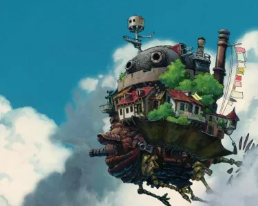

"Avec l'âge...Malicieux"
Le Château Ambulant," film d'animation de Hayao Miyazaki, s'inspire du roman...
Plus d'infosLe Château Ambulant," film d'animation de Hayao Miyazaki, s'inspire du roman "Le Château de Hurle" de Diana Wynne Jones, tout en apportant des nuances subtiles qui lui confèrent une identité cinématographique unique. Les personnages, la magie, la guerre et l'univers fantastique prennent une nouvelle dimension dans cette adaptation, enrichissant l'histoire originale avec le talent distinctif de Miyazaki.
Publié aujourd’hui à 10h20.
Image tirée du film
"Le Château Ambulant" (en japonais, "Hauru no Ugoku Shiro") est un film d'animation magistral du Studio Ghibli réalisé par Hayao Miyazaki, basé sur le roman éponyme de Diana Wynne Jones. Le film transporte le spectateur dans un monde envoûtant et fantastique, où l'art de l'animation et la musique de Joe Hisaishi se combinent pour créer une expérience cinématographique inoubliable.
L'histoire tourne autour de Sophie Hatter, une jeune femme réservée et modeste, dont la vie bascule lorsque la méchante Sorcière des Landes lui jette un sort, la transformant en une vieille dame. Cherchant un moyen de rompre ce sortilège, Sophie se retrouve à bord du Château Ambulant, une immense forteresse mécanique errant dans les cieux, dirigée par le mystérieux et ténébreux sorcier Hauru.

Image tirée du film
Le film met en avant des personnages captivants. Sophie incarne la détermination et la force intérieure alors qu'elle embrasse sa nouvelle apparence, apprenant à se connaître et à aimer la personne qu'elle est devenue. Hauru, lui, est un personnage complexe, hanté par ses propres démons intérieurs. Sa transformation tout au long du film reflète son voyage de l'égocentrisme à l'acceptation et à l'amour. Calcifer, le démon du feu qui alimente le château, ajoute une touche d'humour et de chaleur au récit.
"L'un des thèmes clés du film est la redécouverte de soi. À mesure que les personnages évoluent dans cet univers magique, ils apprennent à s'accepter, à surmonter leurs peurs et à embrasser la beauté de l'âme plutôt que l'apparence extérieure. Le message sous-jacent est que la véritable magie réside dans la façon dont nous percevons et traitons les autres, ainsi que nous-mêmes.

Image tirée du film
Au fur et à mesure que l'intrigue se déroule, les relations entre les personnages se renforcent, démontrant la valeur de l'amitié, de la confiance et de l'amour. L'amour est présenté comme une force puissante capable de guérir et de transformer les individus.
En conclusion, "Le Château Ambulant" est un chef-d'œuvre de l'animation qui transcende les frontières du genre. À travers ses personnages charismatiques, ses thèmes universels et son univers magique, il offre une leçon précieuse sur la valeur de l'acceptation de soi, de la paix, de l'amour et de l'amitié. Ce film incarne parfaitement l'art du Studio Ghibli et continue d'enchanter et d'inspirer les spectateurs du monde entier.
Le Château Ambulant," film d'animation de Hayao Miyazaki, s'inspire du roman...
Plus d'infos